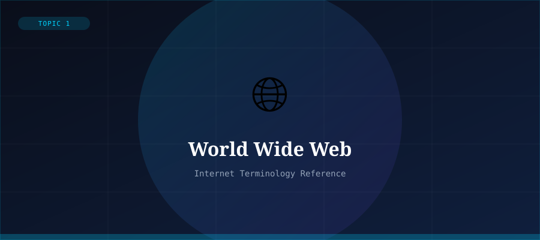

What is the World Wide Web?
The World Wide Web (WWW) is a system of interlinked hypertext documents and multimedia content that is accessed via the Internet. Invented by Sir Tim Berners-Lee in 1989 while working at CERN, the Web transformed the Internet from a tool used mostly by scientists into a global platform for communication, commerce, and information sharing.
It is important to distinguish the Web from the Internet itself. The Internet is the underlying global network infrastructure — the hardware, cables, and protocols that connect computers worldwide. The Web is one of many services that runs on top of the Internet, alongside email, file transfer, and online gaming.
How It Works
The Web is built on three core technologies: HTML (for creating web pages), URLs (for addressing resources), and HTTP (for transferring data). When you type a web address into your browser, the browser sends an HTTP request to a web server, which responds by sending back the HTML page for your browser to display.
Hyperlinks — clickable text or images — connect pages together, creating the interconnected 'web' of documents that gives the system its name.
Key Components
- HTML — the markup language used to create web pages
- HTTP/HTTPS — protocols for transmitting web data
- URLs — addresses used to locate web resources
- Web Browsers — software to access and display web content
- Web Servers — computers that host and deliver web pages
Impact on Society
The Web has fundamentally changed how humans access information, conduct business, communicate, and learn. It enabled e-commerce, social media, online education, digital news, and countless innovations that define modern life.
As of 2024, there are over 1.9 billion websites on the Web, though only a fraction are actively maintained. The Web continues to evolve through Web 2.0, Web 3.0, and beyond.